115年會考-數學詳解（分數對照在最下方）
第一部分:選擇題 (1 ~ 25 題)
1.
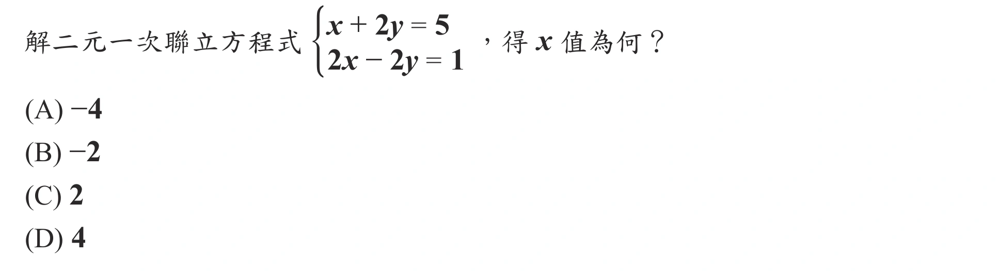
答案
\((C)\)
詳解
兩式相加：
\(3x=6\)
\(\Rightarrow x=2\)
2.
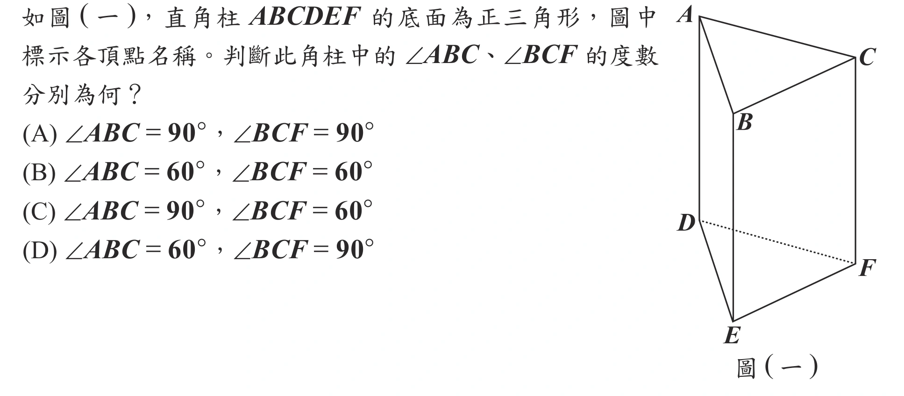
答案
\((D)\)
詳解
上底下底皆為正三角形：\(\angle{ABC}=60^\circ\)
側面為矩形：\(\angle{BCF}=90^\circ\)
3.
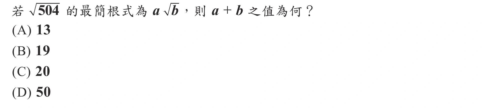
答案
\((C)\)
詳解
\(\sqrt{504}=\sqrt{2^3\times 3^2\times
7}=6\sqrt{14}\)
\(\Rightarrow a=6, b=14\)
\(\therefore a+b=20\)
4.
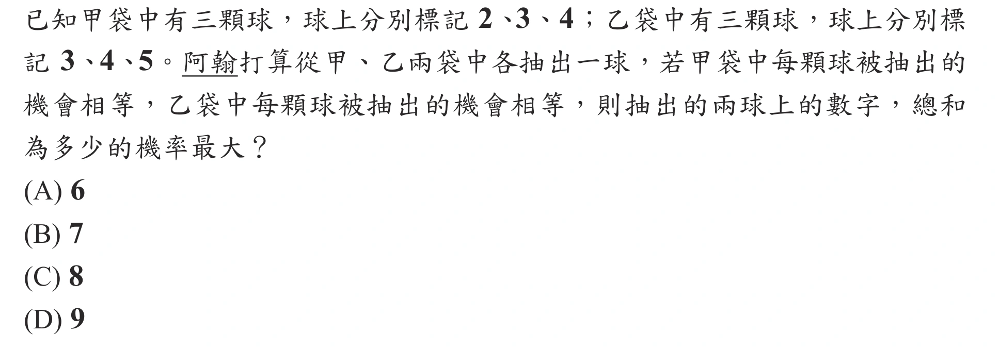
答案
\((B)\)
詳解
總和為 \(5\) 的組合有 \((2,3)\)，機率為 \(\frac{1}{3}\times\frac{1}{3}=\frac{1}{9}\)
總和為 \(6\) 的組合有 \((2,4), (3,3)\)，機率為 \(\frac{1}{3}\times\frac{1}{3}\times
2=\frac{2}{9}\)
總和為 \(7\) 的組合有 \((2,5), (3,4), (4,3)\)，機率為 \(\frac{1}{3}\times\frac{1}{3}\times
3=\frac{3}{9}=\frac{1}{3}\)
總和為 \(8\) 的組合有 \((3,5), (4,4)\)，機率為 \(\frac{1}{3}\times\frac{1}{3}\times
2=\frac{2}{9}\)
總和為 \(9\) 的組合有 \((4,5)\)，機率為 \(\frac{1}{3}\times\frac{1}{3}=\frac{1}{9}\)
所以總和為 \(7\) 的機率最大
5.
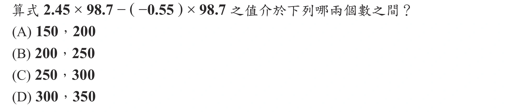
答案
\((C)\)
詳解
\(2.45\times 98.7-(-0.55)\times
98.7\)
\(=(2.45+0.55)\times 98.7\)
\(=3\times 98.7\)
\(=296.1\)
介於 \(250\) 與 \(300\) 之間
6.
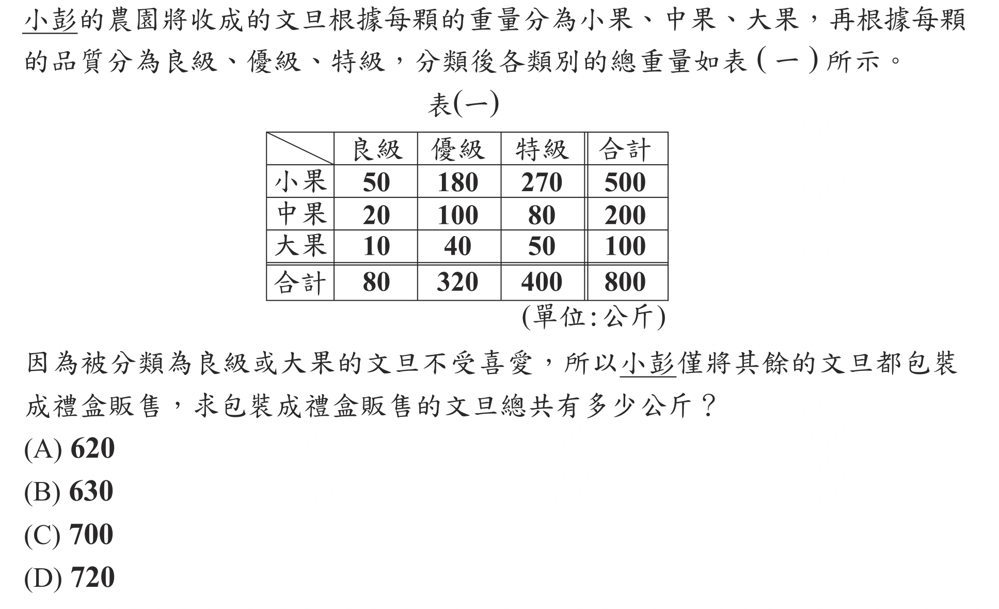
答案
\((B)\)
詳解
優級小果＋優級大果＋特級小果＋特級大果
\(=180+100+270+80=630\)
7.
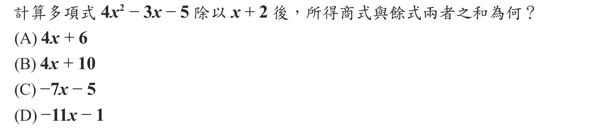
答案
\((A)\)
詳解
\[
\begin{array}{r}
4x-11 \\
x+2 \enclose{longdiv}{4x^{2}-3x-5} \\
\underline{4x^2+8x\phantom{+c}} \\
-11x-5 \\
\underline{-11x-22} \\
17
\end{array}
\]
\(4x-11+17=4x+6\)
8.
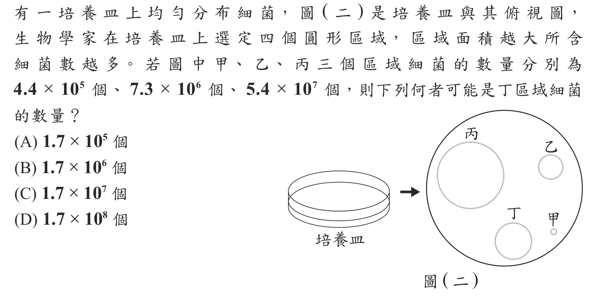
答案
\((C)\)
詳解
\(乙 < 丁 < 丙\)
\(7.3\times 10^6 < 丁 < 5.4\times
10^7\)
\(\Rightarrow 0.73\times 10^7 < 丁 <
5.4\times 10^7\)
\(\therefore\) 選 \((C)\)
9.
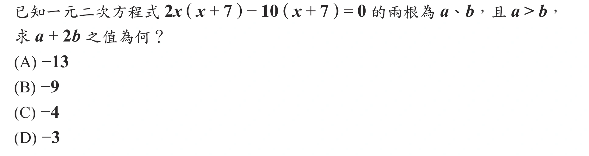
答案
\((B)\)
詳解
\(\Rightarrow 2(x+7)(x-5)=0\)
\(\Rightarrow x=-7, 5\)
\(a=5, b=-7\)
\(a+2b=5+2(-7)=5-14=-9\)
10.
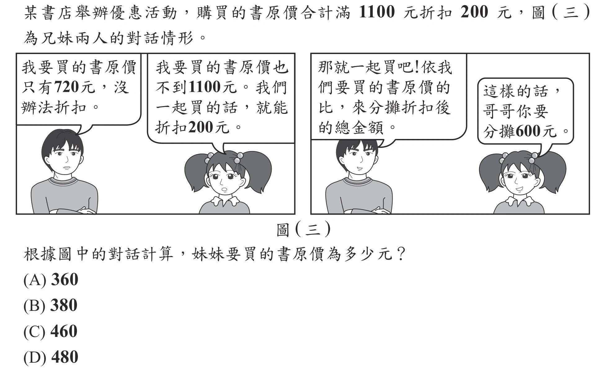
答案
\((D)\)
詳解
設妹妹的書原價為 \(x\) 元
\((720+x-200)\times \frac
{720}{720+x}=600\)
\(\Rightarrow 520+x=\frac{720+x}{720}\times
600\)
\(\Rightarrow
520+x=\frac{5}{6}(720+x)\)
\(\Rightarrow 3120+6x=3600+5x\)
\(\Rightarrow x=480\)
\(\therefore\) 妹妹的書原價為 \(480\) 元
11.
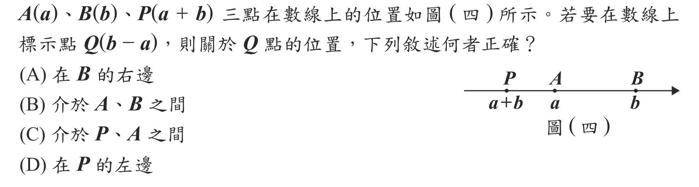
答案
\((A)\)
詳解
\(a+b<a\Rightarrow b<0\)
\(b-a > 0>b\)
\(\therefore Q\) 在 \(B\) 的右邊
12.
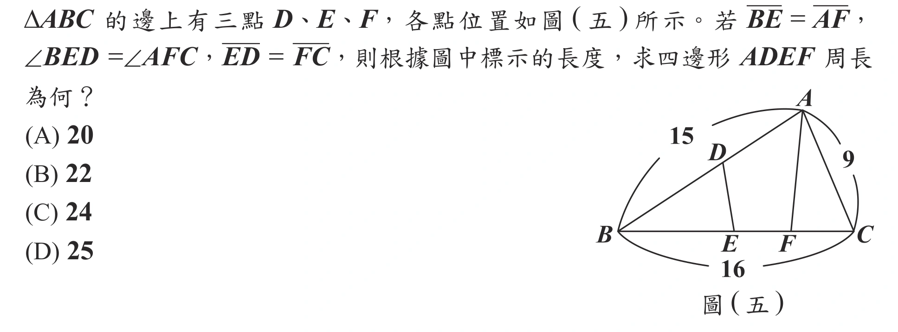
答案
\((B)\)
詳解
\(\overline{BE}=\overline{AF}\)
\(\angle BED=\angle AFC\)
\(\overline{ED}=\overline{FC}\)
\(\therefore \triangle{BED}\cong\triangle{AFC}
(SAS)\)
\(\Rightarrow
\overline{BD}=\overline{AC}=9\)
\(\Rightarrow
\overline{AD}=\overline{AB}-\overline{BD}=15-9=6\)
四邊形 \(ADEF\) 的周長：
\(=\overline{AD}+\overline{DE}+\overline{EF}+\overline{FA}\)
\(=6+\overline{CF}+\overline{EF}+\overline{BE}\)
\(=6+\overline{BC}\)
\(=6+16=22\)
13.
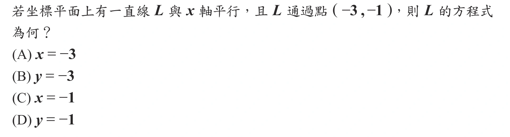
答案
\((D)\)
詳解
設 \(L\) 方程式為 \(y=k\)，過 \((-3,
-1)\)
\(\Rightarrow k=-1\)
\(\Rightarrow L\) 方程式為 \(y=-1\)
14.
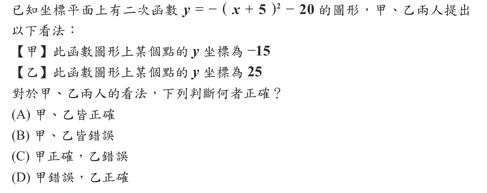
答案
\((B)\)
詳解
此函數為開口向下的二次函數，頂點為 \((-5,
-20)\)
\(\therefore\) 最大值為 \(-20\)
\(-15, 25\) 都大於 \(-20\)
\(\therefore\) 甲乙都錯
15.
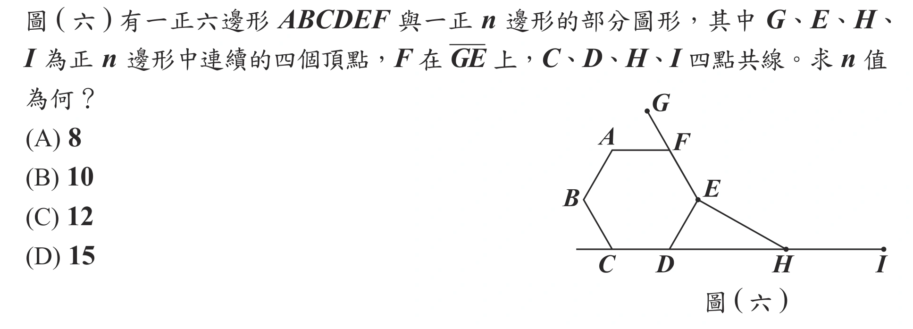
答案
\((C)\)
詳解
正六邊形內角為 \(\frac{(6-2)\times
180^\circ}{6}=120^\circ\)
\(\angle{EHI}=\angle{EDH}+\angle{DEH}\)
(外角定理)
\(=60^\circ+\angle{DEH}\)
\(\angle{FEH}+\angle{DEF}+\angle{DEH}=360^\circ\)
\(\Rightarrow
\angle{EHI}+120^\circ+\angle{DEH}=360^\circ\)
\(\Rightarrow
60^\circ+\angle{DEH}+120^\circ+\angle{DEH}=360^\circ\)
\(\Rightarrow
\angle{DEH}=90^\circ\)
\(\Rightarrow
\angle{EHI}=60^\circ+90^\circ=150^\circ\)
\(\frac{(n-2)\times
180^\circ}{n}=150^\circ\)
\(\Rightarrow n=12\)
16.
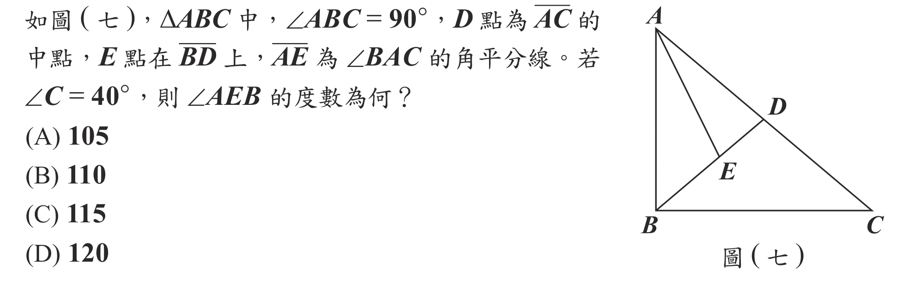
答案
\((A)\)
詳解
\(D\)
為外心（斜邊中點）到三頂點距離相等
\(\Rightarrow
\overline{BD}=\overline{CD}\)
\(\Rightarrow \angle{CBD}=\angle
C=40^\circ\)
\(\Rightarrow
\angle{ABD}=90^\circ-40^\circ=50^\circ\)
\(\angle{AEB}=180^\circ-\angle{ABE}-\angle{BAE}\)
\(=180^\circ-50^\circ-\frac12(180^\circ-90^\circ-40^\circ)\)
\(=105^\circ\)
17.
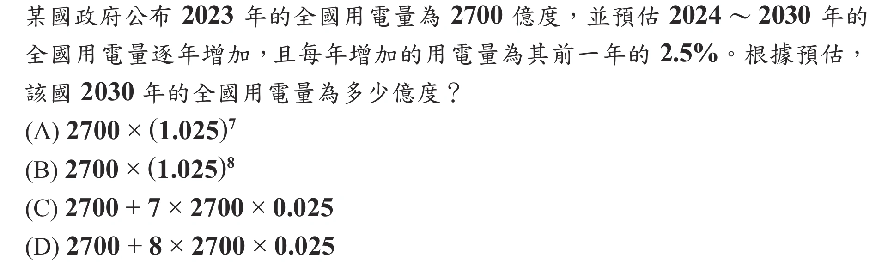
答案
\((A)\)
詳解
\(2030-2023=7\)
\(2700\times (1+2.5\%)^7\)
\(=2700\times (1.025)^7\)
18.
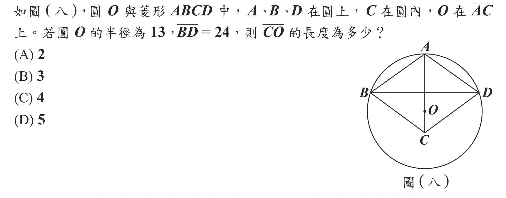
答案
\((B)\)
詳解
設對角線交點為 \(P\)
菱形的對角線互相垂直且平分：
\(\Rightarrow
\overline{BP}=\overline{DP}=\frac12\overline{BD}=\frac12\times
24=12\)
\(\overline{OP}=\sqrt{\overline{OB}^2-\overline{BP}^2}=\sqrt{13^2-12^2}=\sqrt{25}=5\)
\(\overline{CO}=\overline{CP}-\overline{OP}=\overline{AP}-5=(13-5)-5=3\)
19.
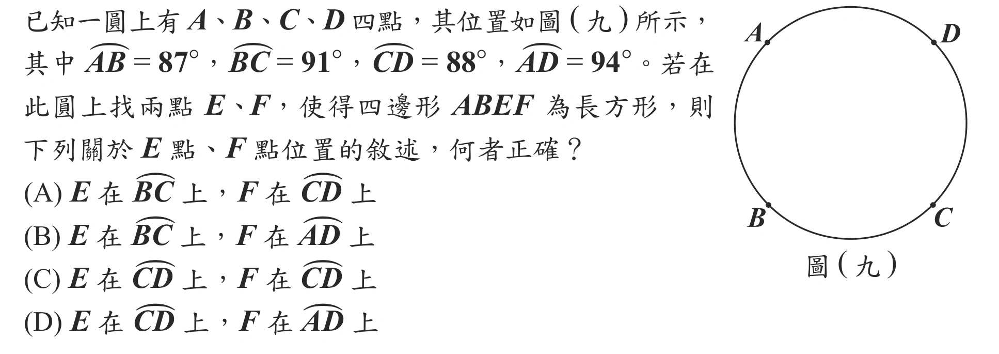
答案
\((D)\)
詳解
\(\angle{ABE}=90^\circ\)
\(\Rightarrow
\overset{\LARGE{\frown}}{AE}=180^\circ\)
\(\Rightarrow
\overset{\LARGE{\frown}}{AD}+\overset{\LARGE{\frown}}{DE}=180^\circ\)
\(\Rightarrow
94^\circ+\overset{\LARGE{\frown}}{DE}=180^\circ\)
\(\Rightarrow
\overset{\LARGE{\frown}}{DE}=86^\circ <
\overset{\LARGE{\frown}}{CD}\)
\(\therefore E\) 在 \(\overset{\LARGE{\frown}}{CD}\) 上
同理 \(\angle{BAF}=90^\circ\) 可得
\(F\) 在 \(\overset{\LARGE{\frown}}{AD}\) 上
20.
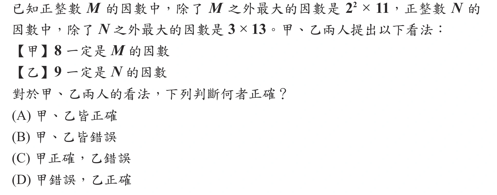
答案
\((C)\)
詳解
\(M=\) 最大因數 \(\times\) 最小因數
\(M\) 的最大因數為 \(2^2\times 11\) 可知 \(M\) 的最小因數 \(\leq 2\)
除了 \(1\) 以外最小是 \(2\)
\(\therefore M=2^3\times 11=88\)
甲正確
\(N=\) 的最大因數為 \(3\times 13\) 可知 \(N\) 的最小因數 \(\leq 3\)
除了 \(1\) 以外最小是 \(2\)
\(\therefore N=2\times 3\times 13=78\)
乙錯誤
21.
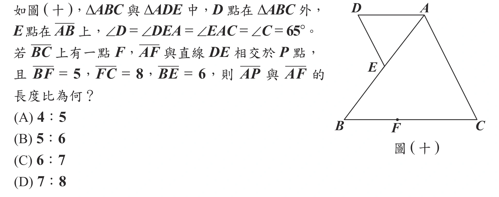
答案
\((D)\)
詳解
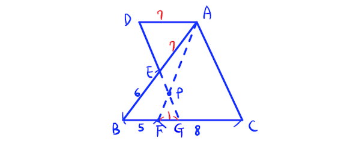
\(\triangle{ADE}, \triangle{ABC}\) 為等腰三角形\(\angle{EAC}=\angle C\Rightarrow \overline{AB}=\overline{BC}=5+8=13\)
\(\overline{AE}=13-6=7=\overline{AD}\)
且 \(\triangle{DAE}\sim\triangle{ABC} (AA)\) \(\Rightarrow \angle{DAE}=\angle{B}\)
\(\angle{AED}=\angle{BEG}\) (對頂角)
\(\Rightarrow \triangle {ADE}\sim\triangle{BGE} (AA)\)
\(\angle D=\angle{FGP}\)
\(\overline{AE}:\overline{BE}=\overline{AD}:\overline{BG}\)
\(\Rightarrow 7:6=7:(5+\overline{FG})\)
\(\Rightarrow \overline{FG}=1\)
\(\triangle{APD}\sim\triangle{FPG} (AA)\)
\(\overline{AP}:\overline{FP}=\overline{AD}:\overline{FG}\)
\(\Rightarrow \overline{AP}:\overline{FP}=7:1\)
\(\Rightarrow \overline{AP}:\overline{AF}=7:8\)
22.
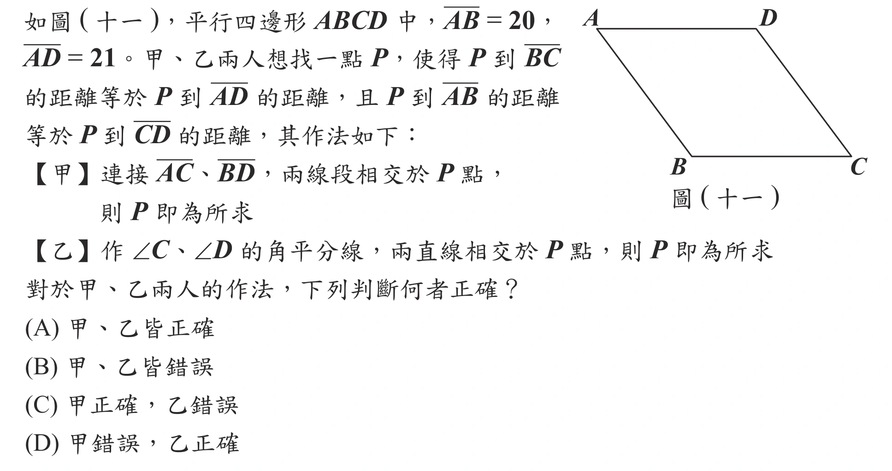
答案
\((C)\)
詳解
甲：
平行四邊形兩對角線把面積四等分
\(\Rightarrow \triangle
{APB}=\triangle{CPD}\)
\(\because
\overline{AB}=\overline{CD}\)
\(\therefore\)
兩邊的高相等，甲正確
乙：
\(P\) 在 \(\angle C\) 的角平分線上\(\Rightarrow\) \(P\) 到 \(\overline{AC}\) 和 \(\overline{BC}\) 的距離相等
\(P\) 在 \(\angle D\) 的角平分線上\(\Rightarrow\) \(P\) 到 \(\overline{AD}\) 和 \(\overline{CD}\) 的距離相等
不能確定 \(P\) 到 \(\overline{AB}\) 和 \(\overline{CD}\) 的距離相等，乙錯誤
23.
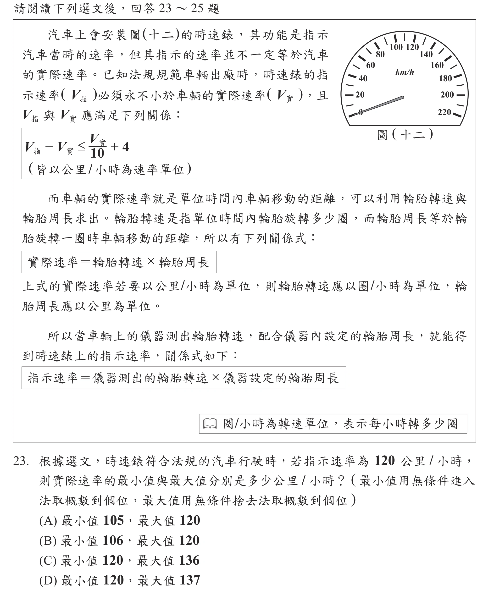
答案
\((B)\)
詳解
\(v\leq 120 \Rightarrow v\)
的最大值為 \(120\)
\(120-v\leq \frac{v}{10}+4\)
\(\Rightarrow \frac{1160}{11}\leq
v\)
\(\therefore\) \(v\) 的最小值為 \(106\)
24.
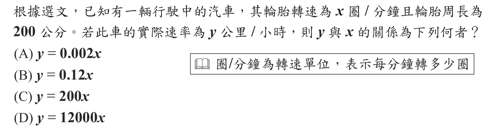
答案
\((B)\)
詳解
轉速 \(x\) 圈/分鐘 \(=60x\) 圈/小時
周長 \(200\) 公分 \(=0.002\) 公里
\(y=60x\times 0.002=0.12x\)
公里/小時
25.
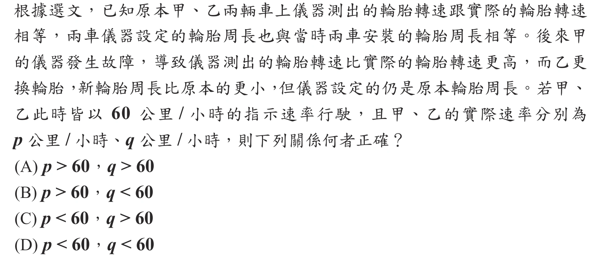
答案
\((D)\)
詳解
甲：實際轉速較儀器低，所以實際速率較儀器顯示的速度慢，\(p < 60\)
乙：實際周長較儀器小，所以實際速率較儀器顯示的速度慢，\(q < 60\)
第二部分:非選擇題 (1 ~ 2 題 )
1.
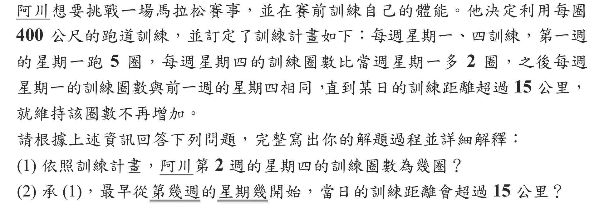
答案
(1) \(9\) 圈
(2) 第 \(17\) 週星期四
詳解
\((1)\)
第一週星期四：\(5+2=7\) 圈
第二週星期一：7 圈
第二週星期四：\(7+2=9\) 圈
\((2)\)
\(15\div 0.4=37.5\) 圈
設第 \(n\) 週星期四跑 \(5＋2(n-1)+2=5+2n\) 圈
\(\Rightarrow 5+2n\geq 37.5\)
\(\Rightarrow n\geq 16.25\)
所以第 \(17\) 週星期四跑 \(5+2\times 17=39\) 圈，超過 \(37.5\) 圈
而第 \(17\) 週星期一跑 \(5+2\times 16=37\) 圈，未達 \(37.5\) 圈
\(\therefore\) 從第 \(17\) 週星期四開始，才會超過 \(15\) 公里
2.
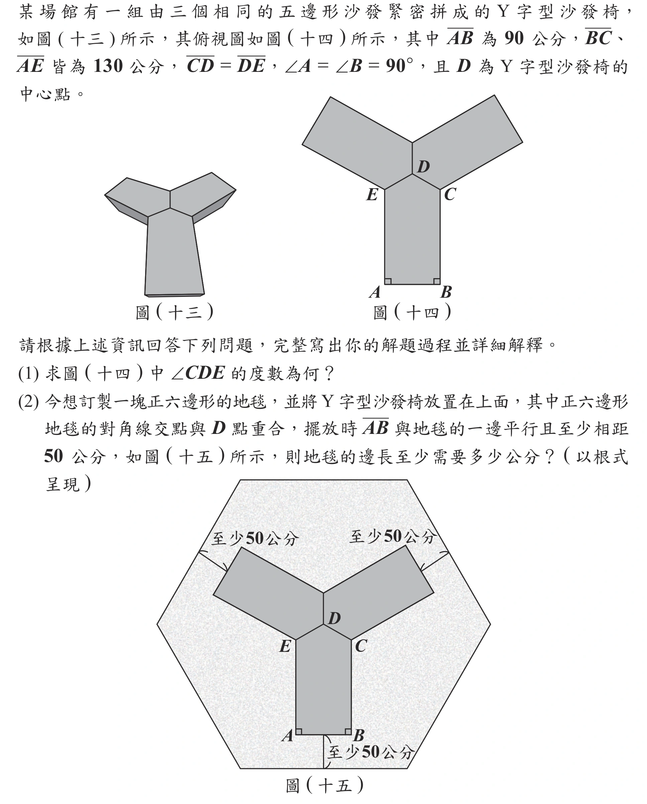
答案
\((1)\) \(120^\circ\)
\((2)\) \(30+120\sqrt{3}\)
詳解
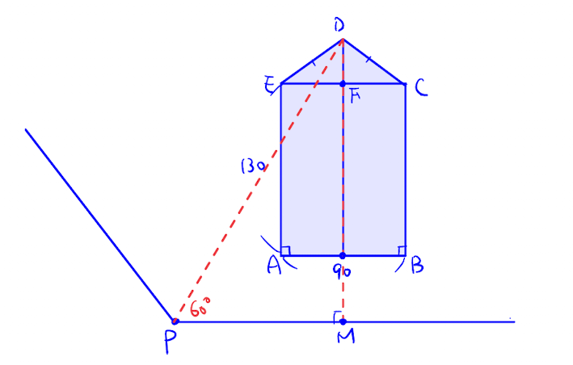
\((1)\)
\(360^\circ\div 3=120^\circ\)
\((2)\)
\(\overline{AE}//\overline{BC}\) (同側內角互補)
連 \(\overline{CE}\)，四邊形 \(ABCE\) 為平行四邊形（一組對邊平行且相等）
\(\Rightarrow \overline{AB}=\overline{CE}=90\)
\(\triangle{CDE}\) 為等腰三角形
作 \(\overline{DF}\perp \overline{CE}\) 於 \(F\)
\(\Rightarrow \angle{EDF}=120^\circ\times\frac12=60^\circ\)
\(\Rightarrow \\overline{FE}=90\times\frac12=45\)
\(\Rightarrow \overline{DF}=45\times\frac{1}{\sqrt{3}}=15\sqrt{3}\)
正六邊形內角為 \(\frac{(6-2) \times 180^\circ}{6} = 120^\circ\)
連六邊形對角線 \(\overline{DP}\)，\(\angle{DPM}=120^\circ\times\frac12=60^\circ\)
\(\Rightarrow \overline{PM}=\overline{DM}\div\sqrt3\geq (15\sqrt{3}+130+50)\div\sqrt3\)
\(\Rightarrow \overline{PM}\geq 15+60\sqrt3\)
正六邊形邊長為 \(2\overline{PM}=30+120\sqrt3\)